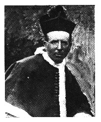

After Aughrim's Great Disaster
(Sean O'Duibhir an Gleanna)
Tune
(Sean O'Duibhir an Gleanna)By Canon Sheehan of Doneraile
Sequenced by Ch.Souchon, after an arrangement by Liam O'Flynn
|
About the author
The Very Rev. Patrick Augustine Canon Sheehan in Gaelic: An Canónach Pádraig Aguistín Ó Síothcháin (17 March 1852 – 5 October 1913), was an Irish Roman Catholic priest, author, political activist was invariably known and referred to as Canon Sheehan of Doneraile, having been appointed on July 4, 1895 Parish Priest of Doneraile, where he wrote almost all of his major works. |
 Canon Sheehan of Doneraile (1852 - 1913) |
A propos de l'auteur
Le chanoine Patrick Augustin Sheehan (en irlandais: An Canónach Pádraig Aguistín Ó Síothcháin (17 mars 1852 – 5 octobre 1913), était un prêtre catholique, à la fois écrivain et homme politique au service de la cause irlandaise, universellement connu et désigné sous l'appellation de "Chanoine Sheehan de Doneraile", paroisse à laquelle il fut affecté le 4 juillet 1895 et où il écrivit l'essentiel de son oeuvre. |
Sheet music - Partition

Modern lyrics
by Patrick Augustine Canon Sheehan [1]
1. After Aughrim's great disaster,
When our foe in sooth was master,
Twas you that first rushed in and swam the Shannon's boiling flood.
And through Slieve Bloom's dark passes
You led your gallowglasses, [2]
Although the hungry Saxon wolves were howling for our blood.
And as we crossed Tipp'rary,
We raised the clan O'Leary
And drove a creagh [3] before them, as their horsemen onward came.
With our spears and swords we gored them,
As through flood and light we bored them,
Ah, but Sean O'Duibhir an Gleanna, we were worsted in the game
2. Long, long we kept the hill-side,
Our couch hard by the rill-side,
The sturdy knotted oaken boughs our curtain overhead.
The summer's blaze we laughed at,
The winter snows we scoffed at;
And trusted to our long steel swords to win us daily bread.
Till the Dutchman's troops came round us,
In fire and steel they bound us.
They blazed the woods and mountains, till the very clouds were flame.
Yet our sharpen'd swords cut through them,
To their very heart we hewed them,
Ah, but Sean O'Duibhir an Gleanna, we were worsted in the game.
3. Here's a health to your and my King
The sovereign of our liking
And to Sarsfield, underneath whose flag we'll cast once more a chance.
For the morning's dawn will wing us
Across the seas and bring us
To take our stand and wield a brand among the sons of France. [4]
And though we part in sorrow
Still Sean O'Duibhir an Gleanna,
Our prayer is 'God save Ireland and pour blessings on her name.'
May her sons be true when needed,
May they never fail as we did,
For Sean O'Duibhir an Gleanna, we were worsted in the game.
Source: /ireland.dyn.dhs.org/
Paroles modernes
du Chanoine Patrick Augustine Sheehan [1]
1. Après Aughrim, ce grand désastre,
Où, certes, l'Anglais sut nous battre,
Tu plongeas le premier dans le Shannon tumultueux.
Quand par Slievebloom, la sombre passe,
Tu conduisis nos "Gall-Oglach", [2]
Tous les Saxons, tels des démons, vociféraient, furieux.
Nous eûmes à Tipperary
L'aide du clan O'Leary:
"Creagh" à l'avant les précédant [3] et une cavalerie!
Bien qu'ayant taillé des croupières
Aux Anglais par flots et clairières,
C'est bien nous, Sean Dwyer du Glen, qui perdîmes la partie.
2. Longtemps nous tînmes la colline:
Notre couche fut la ravine,
Un chêne aux fortes branches porta notre toit pour la nuit.
Hiver de neige, été de flamme,
L'un et l'autre nous les bravâmes:
Car notre pain quotidien, l'épée nous le fournit.
Les gens du Batave encerclent
Nos tranchées, puis y déversent.
Des flots d'acier, de feu, portaient aux nues-mêmes l'incendie.
Nos fers acérés les tenaillent,
Nous frappons d'estoc et de taille...
Mais c'est nous, Sean Dwyer du Glen, qui perdîmes la partie.
3. A la santé de notre roi,
Du souverain de notre choix!
A Sarsfield dont le gonfanon appelle à la revanche!
Car l'aube d'un matin nouveau
Nous emporte au-delà des eaux,
Manier l'épée au milieu des vaillants fils de la France. [4]
Nous partons le coeur serré,
Mais, Shean O' Duibhir an Ghleanna,
Nous implorons la protection de Dieu pour la patrie.
Que grâce à leur zêle assidu
Ses enfants n'échouent jamais plus,
Comme nous, Sean Dwyer du Glen, qui perdîmes la partie!
Traduction Christian Souchon (c) 2006
[1]
Canon Shehan
sets the tune of "Sean O'Duibhir an Gleanna" to his modern poem on the aftermath of
Aughrim
. The
John O'Dwyer of the Glens
addressed in this text, was a chieftain of the O'Dwyers of Kilnamanagh who lived at Cloniharp Castle (Co Tipperary) and fought against Cromwell in 1651.
Such chronological leaps are found in the songs
"Cromdale"
and
"The Standard of Braemar"
.
[2]
Gall-oglass
(irish "gall oglach" : "young foreigner"): an armed mercenary in the service of an Irish chieftain.
[3]
Creagh
: human shield of captured livestock, women and children, placed in front of an advancing army to discourage attack.
[4]
To take our stand and wield a brand among the sons of France
: The famous
"Wild Geese"
.
[1]
Le Chanoine Shehan
utilise la mélodie de "Sean O'Duibhir an Gleanna"
pour son poème moderne sur les derniers combats après
Aughrim
. Le
Jean O'Dwyer du Glen
,
auquel s'adresse le poème avait été le chef des O'Dwyers of Kilnamanagh qui vivaient à Cloniharp Castle (Comté de Tipperary) et avait combattu contre Cromwell en 1651.
On trouve des raccourcis chronologiques de ce genre dans les chants
"Cromdale"
et
"L'étendard de Braemar"
.
[2]
Gall-oglass
(irlandais "gall oglach" : "jeune étranger"): une armée mercenaire au service d'un chef irlandais.
[3]
Creagh
: bouclier vivant composé de femmes et d'enfants capturés que l'on faisait avancer en tête d'une armée pour se protéger d'une attaque.
[4]
Servir et manier l'épée parmi les fils de la France
: les fameuses
"Oies sauvages"
.